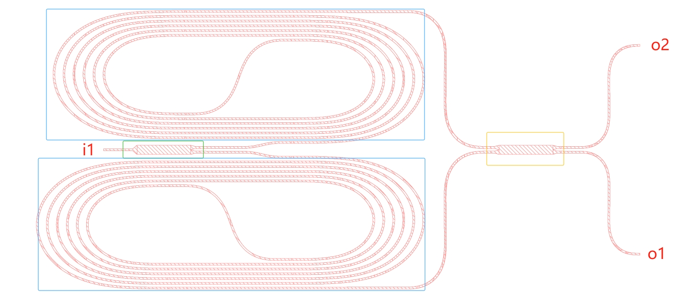

第二个例子: UMZI
第二个例子, 我们以非等臂 Mach-Zehnder 干涉仪为例, 介绍一般情况构建器件的过程, 该例子包含了 Device 类几乎所有可能遇到的操作. 器件的构造如图所示.
{kind=link}

该器件包含一个输入端口 i1, 两个输出端口 o1 和 o2. 此器件的输入首先由一个 YBranch 分束, 经过两个不同长度的延迟线, 最后分别输入 MMI 的两个输入端, MMI 的两个输出端口为该器件的输出.
由于在构建芯片时, 该器件可能被多次复用, 因此固定设计的器件 (YBranch 和 MMI) 应当被复用. 器件库的构建充分考虑了这一点, 由同一器件类定义的参数完全相同的器件, 其名称完全相同, 因此在构建芯片时, 均由同一引用给出. 同一器件, 无论其位于何层级, 基于本器件库得到的版图文件, 均只占用一份存储空间. 在导出 gds 时, 导出函数会递归地自动分析不同 Cell 之间的包含关系, 保证引用的唯一性.
YBranch, MMI
首先, 给出 YBranch, MMI 的定义代码, 这些结构较为简单, 因此不加说明.
class YBranch(Device):
def __init__(self, name):
super().__init__(name)
self.name = name
self.width = 11.0
self.length = 64.4 # opt
self.wg_y = 2.8 # measure
# self.tp_width0 = 7.2 # opt
self.tp_width1 = 2.5
self.tp_length = 5
self.precision = 1e-4
def draw(self):
self.add_polygon_obj(
gdstk.rectangle((-self.length / 2, -self.width / 2), (self.length / 2, self.width / 2), layer=1))
tp_width0 = self.width - 2 * self.wg_y
self.new_path((self.length / 2, self.wg_y), width=tp_width0, layers=1)
self.add_segment(self.tp_length, direction=0, width=self.tp_width1)
self.add_segment(5)
self.end_current_path(add_copy=True)
xy = self.curPath.spine()[-1, :]
x = xy[0]
y = xy[1]
self.curPath.mirror([1, 0])
self.end_current_path()
self.new_path((-self.length/2, 0), width=self.width, layers=1)
self.add_segment(self.tp_length, direction=np.pi, width=self.tp_width1)
self.add_segment(5)
self.end_current_path()
self.add_port('i1', self.curPath.spine()[-1, :], orientation=np.pi, width=self.tp_width1)
self.add_port('o1', [x, -y], orientation=0, width=self.tp_width1)
self.add_port('o2', [x, y], orientation=0, width=self.tp_width1)
class MMI(Device):
def __init__(self, name):
super().__init__(name)
self.name = name
self.width = 13.0
self.length = 125.2 # opt
self.wg_y = 2.2 # measure
# self.tp_width0 = 7.2 # opt
self.tp_width1 = 2.6
self.tp_length = 6
self.precision = 1e-4
def draw(self):
self.add_polygon_obj(
gdstk.rectangle((-self.length / 2, -self.width / 2), (self.length / 2, self.width / 2), layer=1))
tp_width0 = self.width - 2 * self.wg_y
self.new_path((self.length / 2, self.wg_y), width=tp_width0, layers=1)
self.add_segment(self.tp_length, direction=0, width=self.tp_width1)
self.add_segment(5)
self.end_current_path(add_copy=True)
xy = self.curPath.spine()[-1, :]
x = xy[0]
y = xy[1]
self.curPath.mirror([1, 0])
self.end_current_path(add_copy=True)
self.curPath.mirror([0, 1])
self.end_current_path(add_copy=True)
self.curPath.mirror([1, 0])
self.end_current_path(add_copy=True)
self.add_port('i1', [-x, -y], orientation=np.pi, width=self.tp_width1)
self.add_port('i2', [-x, y], orientation=np.pi, width=self.tp_width1)
self.add_port('o1', [x, -y], orientation=0, width=self.tp_width1)
self.add_port('o2', [x, y], orientation=0, width=self.tp_width1)
Spiral
以下代码是构建 Spiral 的类, 主要实现方法均已阐述 (第一个例子中). 主要有两点说明.
首先, 构建延迟线需要我们追踪延迟线的长度, 其中困难之处在于欧拉曲线, 其结构不规则.
为此 add_spine() 方法提供了一个返回值, 为当前指令绘制曲线的中心线长度, 可基于 self.total_length += self.add_spline() 对波导长度进行自动更新.
第二, 对于 Spiral 这种较为繁琐的结构, 代码使用了循环自动更新每一圈的参数, 循环可以广泛用于器件构建, 以及参数扫描芯片构建等场景.
class Spiral(Device):
def __init__(self, name):
super().__init__(name)
self.name = name
self.width = 2.5
self.gap = 3.5
self.N = 2
self.inner_L = 115
self.total_length = 0
self.offs = 10
self.heater_box = []
self.final_radius = 0
self.precision = 5e-3
def draw(self):
self.total_length = 0
offs = self.offs
x = self.inner_L + offs
y = self.inner_L / 1.3
self.new_path([-x/2, -y/2], width=self.width, layers=1)
self.add_segment(offs/2)
self.total_length += self.add_spline([self.inner_L, y, 0, 0])
self.add_segment(offs/2)
self.end_current_path()
self.total_length += offs
xy = self.curPath.spine()[-1, :]
self.new_path(xy, width=self.width, layers=1)
dy = y + self.width + self.gap
for i in range(0, self.N):
self.total_length += self.add_spline([dy*1.05, -dy/2, -np.pi/2, -2.8/dy])
self.total_length += self.add_spline([-dy*1.05, -dy/2, -np.pi, 0])
self.add_segment(x)
self.total_length += x
dy = dy + (self.width + self.gap) * 2
self.curAngle = np.pi
self.total_length += self.add_spline([-dy * 1.05, dy / 2, np.pi / 2, -2.8 / dy])
self.total_length += self.add_spline([dy * 1.05, dy / 2, 0, 0])
if i < self.N - 1:
self.add_segment(x)
self.total_length += x
dy = dy + (self.width + self.gap) * 2
self.total_length += 2*x
self.curAngle = 0
self.add_port('o1', self.curPath.spine()[-1, :], 0, self.width)
self.end_current_path(add_copy=True)
self.curPath.rotate(np.pi)
self.end_current_path()
self.add_port('i1', self.curPath.spine()[-1, :], np.pi, self.width)
self.final_radius = dy * 1.1
print(self.total_length)
UMZI 的最终构建
最后, 我们基于 YBranch, MMI 以及 Spircal 器件, 最终构建 UMZI. 依然同第一个例子一样, 首先直接给出代码.
class UMZI12(Device):
def __init__(self, name):
super().__init__(name)
# All the pattern concerning parameters should be masked.
self.yb_width = 11.0
self.yb_length = 64.4
self.yb_wg_y = 2.8
self.yb_tp_width1 = 2.5
self.yb_tp_length = 5
self.mmi_width = 11.0
self.mmi_length = 64.4
self.mmi_wg_y = 2.8
self.mmi_tp_width1 = 2.5
self.mmi_tp_length = 5
self.sp_gap = 3.0
self.sp_N = 3
self.sp_inner_L = 135
self.sp_l_total_length = 0
self.sp_s_total_length = 0
self.sp_l_offs = 30
self.sp_s_offs = 10
self.output_gap = 250
self.width = 2.2 # waveguide width
self.heater_box = []
def draw(self):
ports = {}
# initialize the basic elements
yb = YBranch("YBranch")
yb.width = self.yb_width
yb.length = self.yb_length
yb.wg_y = self.yb_wg_y
yb.tp_width1 = self.yb_tp_width1
yb.tp_length = self.yb_tp_length
yb_name = yb.generate_cell().name
yb_ports = yb.ports
mmi = MMI("MMI22")
mmi.width = self.mmi_width
mmi.length = self.mmi_length
mmi.wg_y = self.mmi_wg_y
mmi.tp_width1 = self.mmi_tp_width1
mmi.tp_length = self.mmi_tp_length
mmi_name = mmi.generate_cell().name
mmi_ports = mmi.ports
delay_short = Spiral("Spiral_short")
delay_short.width = self.width
delay_short.N = self.sp_N
delay_short.offs = self.sp_s_offs
delay_short_name = delay_short.generate_cell().name
self.sp_s_total_length = delay_short.total_length
delay_short_ports = delay_short.ports
self.heater_box = np.array(delay_short.cell.bounding_box())
delay_long = Spiral("Spiral_long")
delay_long.width = self.width
delay_long.N = self.sp_N
delay_long.offs = self.sp_l_offs
delay_long_name = delay_long.generate_cell().name
self.sp_l_total_length = delay_long.total_length
delay_long_ports = delay_long.ports
dlxy = np.abs(delay_long_ports['o1'].xy)
dlx = dlxy[0]
dly = dlxy[1]
# add reference of y branch
self.add_reference(Device.devList[yb_name], origin=[0, 0])
ports['i1'] = yb.ports['i1'].xy
self.new_path(ports['i1'], yb.tp_width1, layers=1)
self.add_segment(30, width=self.width, direction=np.pi)
self.end_current_path()
ports['i1'] = self.curPath.spine()[-1, :]
# add waveguide from y branch to delay lines
mmi_dy = 6
self.new_path(yb_ports['o1'].xy, yb.tp_width1, layers=1)
self.curAngle = 0
self.add_segment(50, width=self.width)
self.add_spline([50, -mmi_dy, 0, 0])
self.add_segment(10)
self.end_current_path(add_copy=True)
self.curPath.mirror((1, 0))
self.end_current_path()
ports['o1'] = np.array(yb_ports['o1'].xy) + [110, -mmi_dy]
ports['o2'] = np.array(yb_ports['o2'].xy) + [110, +mmi_dy]
# add delay lines
origin_delay_short = - delay_short_ports['i1'].xy + ports['o2']
self.add_reference(Device.devList[delay_short_name], origin=origin_delay_short)
self.heater_box = self.heater_box + origin_delay_short
print(self.heater_box)
ports['o2'] = origin_delay_short + delay_short_ports['o1'].xy
self.heater_box = delay_short.cell.bounding_box()+origin_delay_short
origin_delay_long = - np.array([dlx, dly]) + ports['o1']
self.add_reference(Device.devList[delay_long_name], origin=origin_delay_long, rotation=np.pi, x_reflection=True)
ports['o1'] = origin_delay_long + np.array([-dlx, -dly])
# compensate the x diff of two delay lines
dx = np.abs(ports['o1'][0] - ports['o2'][0])
self.new_path(ports['o1'], self.width, layers=1)
self.add_segment(dx)
self.end_current_path()
ports['o1'] = self.curPath.spine()[-1, :]
self.new_path(ports['o1'], self.width, layers=1)
self.add_segment(delay_long.offs+delay_long.inner_L+115, width=mmi.tp_width1)
dy = -ports['o1'][1] - mmi.wg_y
self.add_spline([dy/3.3, dy/2, np.pi/2, 0])
self.add_spline([dy/3.3, dy/2, 0, 0])
self.add_segment(5)
# self.add_segment(30)
ports['o1'] = self.curPath.spine()[-1, :]
self.end_current_path(add_copy=True)
self.curPath.mirror((1, 0))
self.end_current_path()
ports['o2'] = self.curPath.spine()[-1, :]
# add mmi
origin_mmi = - mmi_ports['i1'].xy + ports['o1']
self.add_reference(Device.devList[mmi_name], origin=origin_mmi)
ports['o1'] = origin_mmi + mmi_ports['o1'].xy
ports['o2'] = origin_mmi + mmi_ports['o2'].xy
dy = self.output_gap / 2 - ports['o2'][1]
self.new_path(ports['o1'], width=mmi.tp_width1, layers=1)
self.add_segment(15, width=self.width)
self.add_segment(5, width=self.width)
self.add_spline([dy/3.3, -dy/2, -np.pi/2, 0])
self.add_spline([dy / 3.3, -dy/2, 0, 0])
self.end_current_path(add_copy=True)
ports['o1'] = self.curPath.spine()[-1, :]
self.curPath.mirror((1, 0))
self.end_current_path()
ports['o2'] = self.curPath.spine()[-1, :]
self.add_port('i1', ports['i1'], np.pi, self.width)
self.add_port('o1', ports['o1'], 0, self.width)
self.add_port('o2', ports['o2'], 0, self.width)
此代码较长, 仍然像第一个例子, 分段解释功能.
类的析构函数 __init__ 中, 包含了要用到器件的全部参数, 包括 ybranch, mmi 以及两种 spiral.
接下来分析 draw() 方法.
yb = YBranch("YBranch")
yb.width = self.yb_width
yb.length = self.yb_length
yb.wg_y = self.yb_wg_y
yb.tp_width1 = self.yb_tp_width1
yb.tp_length = self.yb_tp_length
yb_name = yb.generate_cell().name
yb_ports = yb.ports
mmi = MMI("MMI22")
mmi.width = self.mmi_width
mmi.length = self.mmi_length
mmi.wg_y = self.mmi_wg_y
mmi.tp_width1 = self.mmi_tp_width1
mmi.tp_length = self.mmi_tp_length
mmi_name = mmi.generate_cell().name
mmi_ports = mmi.ports
delay_short = Spiral("Spiral_short")
delay_short.width = self.width
delay_short.N = self.sp_N
delay_short.offs = self.sp_s_offs
delay_short_name = delay_short.generate_cell().name
self.sp_s_total_length = delay_short.total_length
delay_short_ports = delay_short.ports
self.heater_box = np.array(delay_short.cell.bounding_box())
delay_long = Spiral("Spiral_long")
delay_long.width = self.width
delay_long.N = self.sp_N
delay_long.offs = self.sp_l_offs
delay_long_name = delay_long.generate_cell().name
self.sp_l_total_length = delay_long.total_length
delay_long_ports = delay_long.ports
dlxy = np.abs(delay_long_ports['o1'].xy)
在 draw() 方法的第一部分, 我们对要使用子器件进行初始化.
上一段代码进行了四个器件的初始化, 分别是 ybranch, mmi 以及两种不同长度的 spiral.
使用子器件构建器件的目的, 是在构建器件时我们希望不轻易改变的结构可以被复用, 以及代码的整洁性.
此外, 子器件也可以作为原子组件用于其它复合器件的构建, 能够增强代码的复用性.
初始化器件过程非常简单, 主要分为三步:
创建器件对象, 并修改其属性至所需.
生成放置子器件的 PCell, 为此 Device 类已经提供了方法
generate_cell(), 该方法将创建gdstk.Cell对象, 将器件结构放置于该 Cell, 并返回此 Cell. 在此过程中, 将根据器件属性, 自动为子器件命名, 该名称基于器件属性 md5 值计算, 可以认为绝对唯一, 放置于Cell.name, 因此可以通过generate_cell().name直接获取至变量, 用于接下来的引用生成,.获取子器件的端口信息, 以及 heater_box 信息, 后者用于 heater 创建. 上述代码中, 对于短 spiral, 代码通过调用已生成 Cell 的
Cell.bounding_box()方法, 获取了此器件外边框的信息, 用于 heater_box 生成.
接下来放置器件, 以 ybranch 为例.
# add reference of y branch
self.add_reference(Device.devList[yb_name], origin=[0, 0])
ports['i1'] = yb.ports['i1'].xy
self.new_path(ports['i1'], yb.tp_width1, layers=1)
self.add_segment(30, width=self.width, direction=np.pi)
self.end_current_path()
ports['i1'] = self.curPath.spine()[-1, :]
以上代码段主要有三个方面需要说明.
第一, 子器件引用的添加. 为此, Device 类提供了方法 add_reference(), 其第一个参数为待生成引用的 gdstk.Cell 对象.
此对象可以用户手动生成, 也可以从 Device.DevList 获取.
当通过 Device 类的 generate_cell 方法生成 PCell 时, 此 PCell 对象会被自动加入 Device 类的静态字典, 以供后续调用.
获取该器件的键值, 即我们通过 generate_cell().name 所得的名称.
这里我们便是从 Device.DevList 待放置的 ybranch 的 PCell 对象.
方法 add_reference() 的第二个参数为放置位置, 该 PCell 的原点将被放于此坐标处.
第二, 在放置器件后, 为了继续连线, 程序自动获取了该器件输出端口的坐标. 在生成 PCell 后, 该子器件的所有参数和性质均确定,
因此可以直接通过子器件对象的 ports 属性, 获取其端口信息.
属性 ports 为字典, 通过用户自定义端口名作为键值即可直接得到 Ports 对象, 其属性 xy 记录了此端口的位置.
从子器件获取的端口位置, 结合 add_reference() 给定的平移量, 即可算出放置后器件的端口坐标.
随后, 此代码段在 ybranch 输入端口之前, 连接了整个器件的输入波导.
待路径生成完毕后, 调用了 self.curPath 的 spine() 方法, 获取了路径末端坐标, 存入字典 ports 用于后续器件建立.
方法 spine() 返回当前路径中心轨迹的坐标, 是 xy 坐标的列表, 代码段中通过 [-1, :] 索引至最后坐标点, 得到路径末端坐标.
self.add_reference(Device.devList[delay_long_name], origin=origin_delay_long, rotation=np.pi, x_reflection=True)
以上是最后需要说明的内容, 本语句依然是放置子器件引用, 但额外加入了 rotation 和 x_reflection 两个参数用于结构的变换. Device 类提供的图形变换较为基础, 当使用此特性时, 需自行计算变换后末端坐标的位置. 当平移, 旋转和镜像同时作用于子器件时, 变换顺序为 镜像>旋转>平移.
除以上特殊说明内容外, 构建 UMZI 的其余语句均已在第一个例子中有所介绍, 不再赘述. 在构建器件过程中, 要善于利用器件库提供的方法获取坐标, 从而更快捷完成结构的搭建.